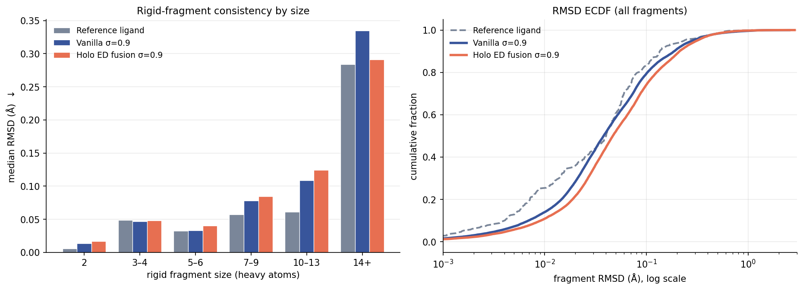

The third structural-quality measure from the VoxBind paper — Figure 11(b) — implemented here for
the first time. Neither this repo nor the upstream copy had it; only strain energy (Fig 6) and
steric clashes (Fig 7) existed. It asks a question the other two cannot: is the model's
local geometry right?
1Bottom line
Local geometry is not where the fusion model loses. Both models sit at
crystal-ligand quality — vanilla's median fragment RMSD (0.0378 Å) is actually below the
reference ligands' (0.0402 Å), and fusion's (0.0467 Å) is 0.009 Å above it. That gap is an order
of magnitude below X-ray coordinate precision. Whatever drives the PoseCheck deficit, it is not
broken fragment geometry.
Model
Fragments
Median RMSD (Å)
Molecules
MMFF failures
Reference ligand (crystal)
294
0.0402
79
0 (0.0%)
Vanilla σ=0.9
31,094
0.0378
7,888
310 (3.9%)
Holo ED fusion σ=0.9 (atomblob7 v2p1)
30,418
0.0467
7,873
470 (6.0%)
Lower is better. The overall median is dominated by the smallest bin (2-atom fragments are a third
of the total), so the size-binned table in section 3 is the comparison that matters — it is also
the form the paper reports.
2What the metric does
A rigid fragment has no internal degrees of freedom. A benzene ring, an amide, a fused bicycle —
each has exactly one correct shape, so a force field has no reason to move it. If it moves,
the generated geometry was wrong to begin with. That is the whole idea.
Optimise the molecule with MMFF (hydrogens added first — MMFF requires them).
Cut every rotatable bond; the connected components left over are the rigid fragments.
Per fragment, take the RMSD between its atom coordinates before and after optimisation.
Report the median RMSD binned by fragment size.
Two implementation choices that decide whether the number means anything
Each fragment is Kabsch-superimposed before the RMSD. Optimising the rest of the
molecule inevitably translates and rotates every fragment bodily. That rigid-body drift is not a
geometry error, and without superposition it would dominate the RMSD and make the metric
meaningless. A reflection check is included, since a mirror image is not a rigid motion.
RMSD is read off heavy atoms only. MMFF needs hydrogens, but hydrogens are added
by RDKit at inferred positions, so including them would measure the H-placement heuristic rather
than the model. AddHs appends, leaving heavy-atom indices untouched.
How it differs from strain energy
Strain energy (Fig 6)
Rigid fragments (Fig 11b)
Force field
UFF
MMFF
Quantity
energy difference (kcal/mol)
coordinate RMSD (Å)
Scope
whole-molecule conformation
inside rigid fragments only
Catches
globally contorted conformer
wrong bond lengths / angles / ring shape
They are complements by construction. Strain relaxes under a 0.1 Å position constraint precisely so
that local imperfections wash out and only global strain is reported — which is exactly what this
metric targets. A model can be good at one and bad at the other.
3By fragment size

Left — median RMSD per fragment-size bin (lower is better), the paper's
Figure 11(b) form. Right — ECDF over all fragments on a log axis; further left
and higher is better.
Fragment size
Median RMSD (Å)
n fragments
reference
vanilla
fusion
vanilla
fusion
2
0.0058
0.0138
0.0166
10,952
9,705
3–4
0.0491
0.0470
0.0482
4,618
4,282
5–6
0.0324
0.0329
0.0404
7,503
7,470
7–9
0.0576
0.0782
0.0844
4,441
4,488
10–13
0.0609
0.1085
0.1243
2,466
2,907
14+
0.2837
0.3349
0.2915
1,114
1,566
Three readings
The gaps are tiny in absolute terms. Fusion trails vanilla by 0.001–0.016 Å
across the bins. For scale, heavy-atom coordinate precision in a good crystal structure is
~0.1–0.2 Å; these differences are well inside the noise a crystallographer would ignore.
Both models track the reference closely up to ~6 atoms, then drift. At 7–9 and
10–13 atoms the generated fragments are noticeably worse than crystal ligands
(0.078 / 0.109 and 0.084 / 0.124 against 0.058 / 0.061). Medium-sized rigid systems — fused
rings, extended conjugation — are where voxel-decoded geometry is least accurate, and that is a
limitation both models share.
The largest bin reverses again. Fusion (0.2915) beats vanilla (0.3349) at 14+
atoms and nearly matches the reference (0.2837) — the same reversal seen in strain energy and
steric clashes. Three independent measures agreeing on this makes it a real property of the
fusion model, not noise.
4What this settles, and what it does not
The working hypothesis from the PoseCheck write-up was that the fusion model is not
producing broken geometry, but rather poses that sit tighter against the receptor. This metric was
run as the discriminating test, since it measures local geometry directly and continuously — where
PoseBusters only applies pass/fail thresholds.
The hypothesis survives. Three lines now agree that local geometry is fine:
PoseBusters ties on every bond-length, bond-angle and flatness check; fragment RMSD differs by
0.009 Å overall; and both models sit at crystal-ligand quality. Meanwhile strain (+32%) and clashes
(+23%) are substantially worse for fusion. The deficit therefore lives in global
conformation and placement, not in how the model draws a ring or a bond.
Two honest caveats. First, the relative gap in fragment RMSD (+24%) is not far off
strain's (+32%) — it is the absolute magnitude that makes it negligible, and that argument
depends on accepting ~0.01 Å as physically unimportant. Second, MMFF failed on
6.0% of fusion molecules against 3.9% of vanilla's, and those molecules are
silently excluded. If the failures are enriched for bad geometry — plausible, since MMFF
parameterisation fails on unusual valences and atom types — then both models' numbers are
optimistic and fusion's more so. That failure-rate difference is itself the clearest local-chemistry
signal in this whole analysis, and it is worth a closer look on its own.
The remaining open question is unchanged: is the fusion deficit caused by the density conditioning
or simply by less training (350 epochs against 923)? The discriminating experiment is still to run
the same three measures on an intermediate fusion checkpoint and see whether the gap closes with
epochs.
5Reproducing
Evaluation — CPU only, no receptor needed, ~45 s per run at 12 workers